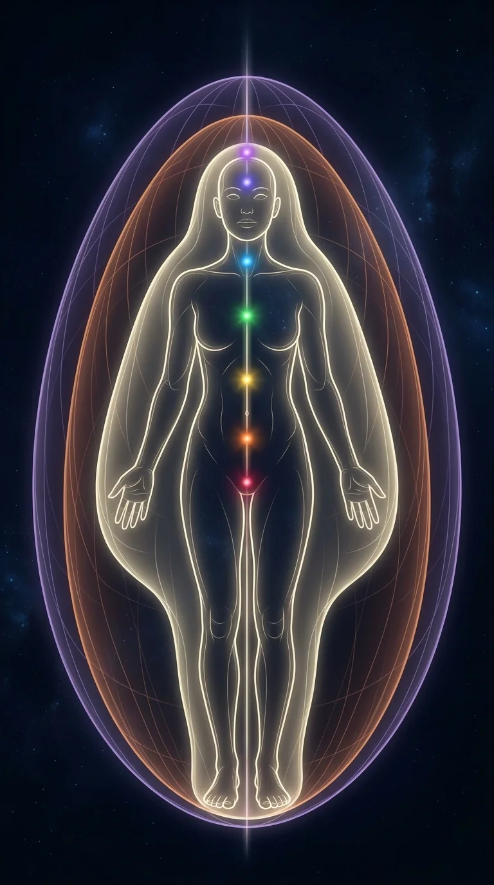

Antaḥkaraṇa
Prima soglia · aperta a tutti
Quello che fai
tenere traccia della giornata, attivare squadre, proporre attività, espandere la comunità
Quello che condividi
ricerca, formazioni, racconti, persone e luoghi in risonanza, assistenza terapeutica, i tuoi prodotti in scambio o in vendita
Quello che ricevi
karma yoga, ospitalità, pubblicazione e stampa, lezioni, strumenti di coscienza, alimenti, rimedi, prenotazioni e pagamenti
inizia il percorso dei talenti
riprendi da dove eri
Ponte verso l’Evoluzione della Specie Umana